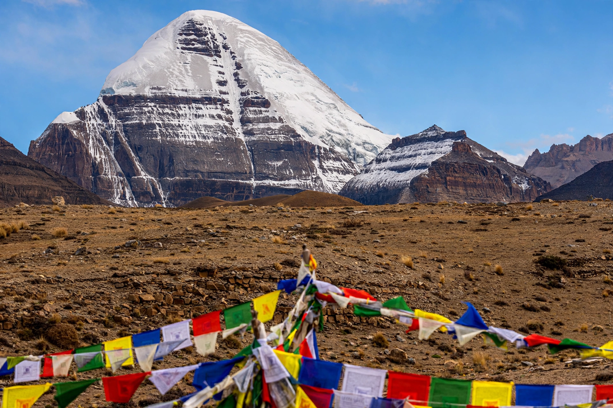

Mount Kailash

Mount Kailash is a mountain in the Kailash Range of the Transhimalaya, in the Tibet Autonomous Region of China, close to the sources of some of Asia's longest rivers — the Indus, the Sutlej, the Brahmaputra (Yarlung Tsangpo) and the Karnali, a Ganges tributary. Its elevation is about 6,638 metres (21,778 ft).
The mountain is sacred in four religions: Hinduism (as the abode of Shiva), Buddhism, Jainism and the indigenous Tibetan Bon tradition. Pilgrims circumambulate the mountain on a 52 km kora (circuit), believed to bring spiritual merit.
Climbing
Unlike Everest and other great peaks, Mount Kailash has never been climbed, out of respect for its religious significance; mountaineering there is prohibited. The great alpinist Reinhold Messner was reportedly offered permission in the 1980s and declined.
Geography
The twin lakes Manasarovar and Rakshastal lie at the mountain's foot, themselves important pilgrimage sites. The distinctive four-sided, pyramid-like profile of Kailash is visible from great distances across the plateau.